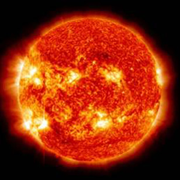

The Sun
The Sun is the star at the center of the Solar System formed about 4.6 billion years ago. It is almost perfectly spherical and consists of hot plasma interwoven with magnetic fields. It has a diameter of about 865,374 mi, around 109 times that of Earth. Its mass (approximately 330,000 times the mass of Earth) accounts for about 99.86% of the total mass of the Solar System.